1. 选择【在研与结题】菜单，依序选择【结题管理】，【填写结题报告】子菜单，选择相应项目书，点击【进入填写】，点击【下载填报说明与撰写提纲】按要求填写报告内容。
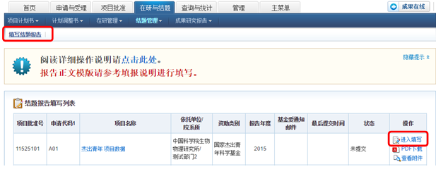
2. 逐项填写结题报告内容，【项目基本信息】不可编辑，批准金额为直接费用。
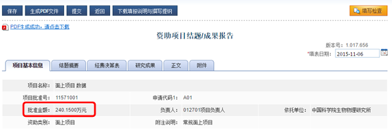
3. 选择【结题摘要】，填写中、英文摘要与关键词，均为必填项。
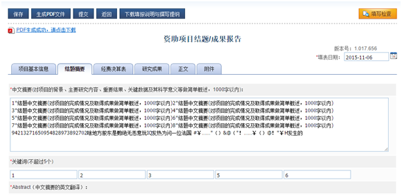
4. 选择【经费决算表】，按图示填写表格。需注意，调整后预算必须等于批准金额，且预算调整数合计必须等于0。
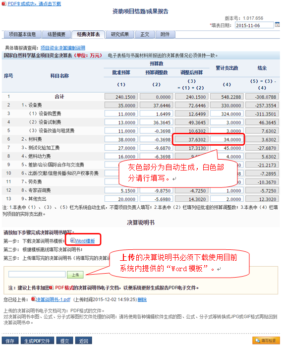
5. 结题/成果报告 —— 增加成果
选择【研究成果】选项卡，点击【添加成果】收集已获得第三方文献库收录或认证的论著，点击【成果排序】可调整调整本结题报告中成果的顺序，点击【查看成果】可查看本结题报告中已收集或录入的论著。
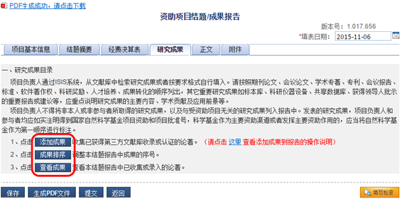
5.1.3 点击【完成成果收集】可将成果添加至报告中并关闭窗口。
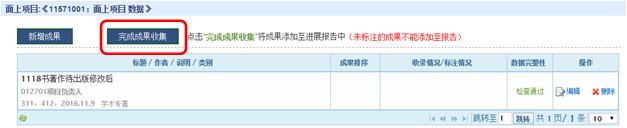
5.1.4 选择【成果排序】，调整顺序后，点击【完成成果序号调整】即可完成成果添加全过程。
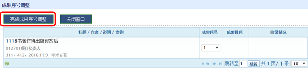
5.2 添加成果方式 —— 导入本人成果
负责人可从本人成果库中选择成果，然后导入项目进展报告中。
5.2.1 如未在个人成果库添加成果，选择【管理】菜单，依序选择【个人信息管理】，【个人信息维护】子菜单，选择【研究成果】选项卡，点击【新增成果】。
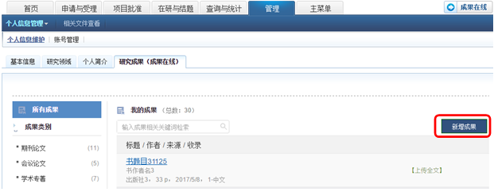
5.2.2 选择一种方式导入成果
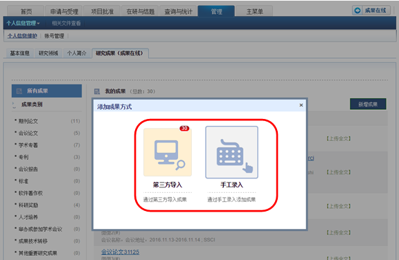
5.2.3 选择【第三方导入】，选择【未导入的成果】选项卡，选择相应成果后点击【导至个人成果库】可在个人成果库中添加成果。
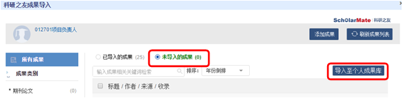
5.2.4 然后在报告中选择【导入本人成果】，选择相应成果后点击【导至成果至报告】。
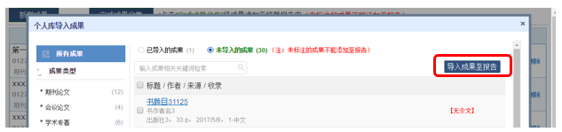
5.3 添加成果方式 —— 导入项目组成果
负责人可在科研之友创建项目群组，并在群组中收集项目组成员成果后导入至项目结题报告，或者亦可用本人的成果库进行成果导入。
5.3.1 输入群组名选择可快速匹配已有的项目群组，点击【关联群组】可关联选择的群组；点击【快速创建群组并关联】会根据项目信息在科研之友创创建一个项目群组。
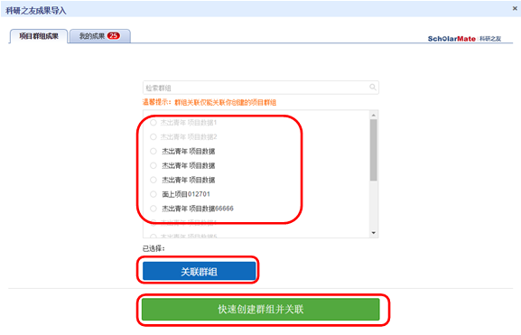
5.3.2 负责人可从【项目群组成果】或【我的成果】中选择成果，点击【导入成果至报告】导入成果至结题报告。
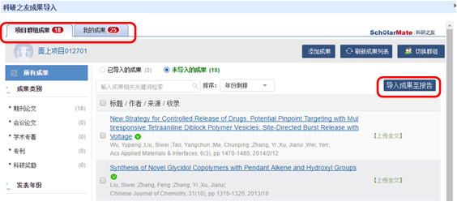
5.4 添加成果方式 —— 录入项目组成果
负责人如无法通过个人成果库或第三方导入方式添加成果，可手动录入项目组成果，其中带*为必填项
5.4.1 选择【录入项目组成果】，手动填写完信息后，点击【保存】。
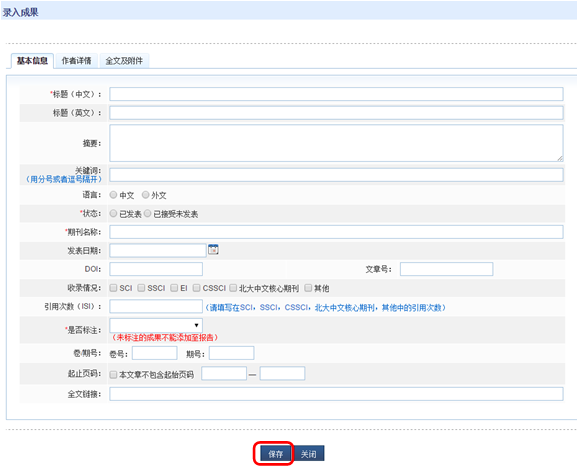
6.结题/成果报告-正文填写
按照【填报说明及撰写提纲】中要求填写结题报告/成果报告正文，正文上传的内容可点击【正文撰写模板】下载并使用。
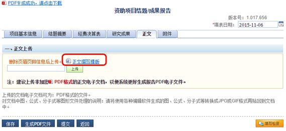
7.附件材料上传
项目负责人和参与者与项目相关资料，与报告相关图片、表格等可通过【附件】上传。
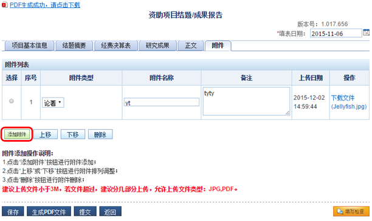